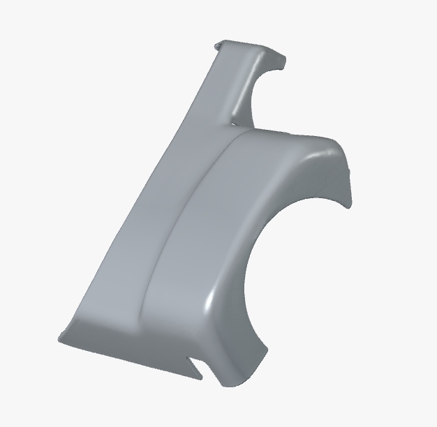
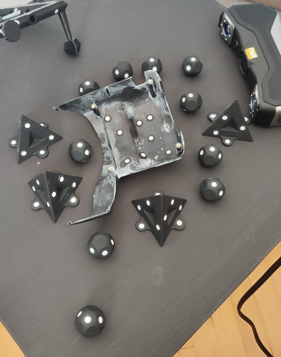
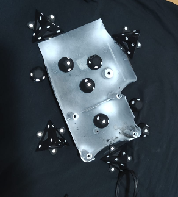
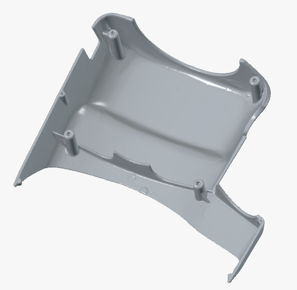

Zintegrowana inżynieria mechaniczna, budowa maszyn i oprogramowanie embedded
Łączymy precyzyjną inżynierię odwrotną i skanowanie 3D (do 0,02 mm), wytwarzanie z kompozytów węglowych, budowę dedykowanych urządzeń produkcyjnych oraz dedykowany firmware C/C++.
Od uszkodzonego wzorca po gotowy detal funkcjonalny
Zobacz jak łączymy skanowanie 3D, inżynierię odwrotną CAD i wytwarzanie addytywne.




W czym możemy Ci pomóc?
Wybierz wyzwanie, z którym się mierzysz — przeprowadzimy Cię przez cały proces inżynieryjny.
Odtworzyć część bez dokumentacji
Masz uszkodzony, zużyty lub niedostępny element. Zeskanujemy go, odbudujemy geometrię w CAD i przygotujemy do wykonania.
Odtwarzanie części ➔Uzyskać model CAD STEP
Zamienimy fizyczną część albo siatkę STL na edytowalny model parametryczny STEP/IGES i dokumentację techniczną 2D.
Modelowanie CAD ➔Wykonać techniczny wydruk 3D
Dobierzemy materiał (PA-CF, PC, ASA, TPU) i wykonamy część funkcjonalną, prototyp, uchwyt lub krótką serię produkcyjną.
Druk kompozytowy ➔Opracować firmware lub maszynę
Napiszemy stabilne oprogramowanie wbudowane C/C++ (CAN/UDS/Qi) lub zaprojektujemy dedykowane urządzenie z PLC Siemens.
Embedded & Maszyny ➔Dla kogo realizujemy projekty?
Rozwiązujemy realne problemy inżynieryjne w zakładach produkcyjnych, warsztatach i działach R&D.
Utrzymanie ruchu i produkcja
Części maszyn bez dokumentacji, nagłe awarie, elementy wycofane z produkcji, koła zębate, korpusy i zużyte prowadnice.
Konstruktorzy i działy R&D
Prototypy, digitalizacja makiet, tworzenie parametrycznej dokumentacji CAD, optymalizacja pod obróbkę CNC i formy.
Motoryzacja klasyczna i renowacja
Odtwarzanie niedostępnych elementów wnętrza, mocowań, kratek, obudów wskaźników, klamek i detali nadwozia aut zabytkowych.
Firmy elektroniczne i IoT
Oprogramowanie sterowników pojazdów, moduły ładowania bezprzewodowego Qi, bootloadery oraz obudowy prototypowe.
Dlaczego możesz bezpiecznie powierzyć nam swój unikatowy detal?
Bezpośredni kontakt z inżynierem
Od pierwszego telefonu po odbiór plików rozmawiasz bezpośrednio ze specjalistą prowadzącym Twój projekt, bez pośredników.
Poufność i umowa NDA
Wszystkie pliki, kody i powierzone detale traktujemy jako ściśle poufne. Na życzenie podpisujemy formalną umowę NDA.
Bezpieczny transport door-to-door
Ubezpieczona przesyłka kurierska w obie strony. Część fizyczna po wykonaniu pomiaru wraca nienaruszona pod Twój adres.
MULTICORE Maksym Leski
Specjalizuję się w inżynierii odtworzeniowej, precyzyjnym skanowaniu 3D, budowie dedykowanych maszyn oraz systemach wbudowanych dla przemysłu, motoryzacji i działów badawczo-rozwojowych.
Łączę praktyczną wiedzę z zakresu metrologii optycznej, modelowania powierzchniowego CAD, wytwarzania addytywnego oraz oprogramowania mikrokontrolerów. Klienci współpracują ze mną bezpośrednio — co gwarantuje precyzję ustaleń, dyskrecję oraz brak zbędnych opóźnień komunikacyjnych.
📦 Obsługa klientów z całej Polski w modelu wysyłkowym door-to-door. Darmowy odbiór i zwrot powierzonej części kurierem w cenie usługi.
Standardy inżynierskie MULTICORE:
-
▸
Zakres terytorialny: Cała Polska (wysyłka kurierska)
-
▸
Godziny kontaktu: Poniedziałek – Piątek: 08:00 – 18:00
-
▸
Czas odpowiedzi: Wstępna ocena zwykle w ciągu kilku godzin
-
▸
Poufność: Możliwość podpisania umowy NDA przed wysyłką
-
▸
Formaty CAD: STEP, IGES, Parasolid x_t, rysunki PDF
Odpowiedzi na pytania inżynierskie
Wyślij zapytanie i otrzymaj wstępną wycenę
Opisz swój detal, projekt maszyny lub wymagania firmware'u. Odpowiemy ze wstępną oceną technologiczną zwykle w ciągu kilku godzin.